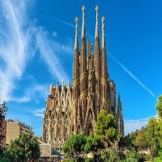
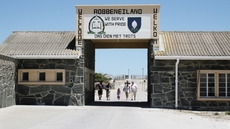
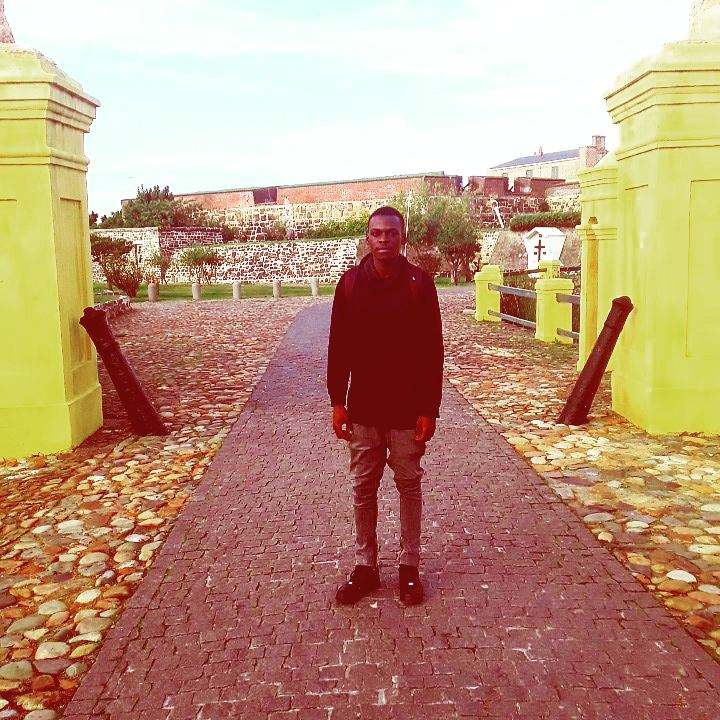

Fidel
Dhlamini
Dhlamini

Which City?
Barcelona
Barcelona is utterly incomparable. It’s one of a few must-see cities with its
own identity. This is partly down to a generation of early-20th-century artists
and architects, like Antoni Gaudí, whose unforgettable buildings are like
nothing you’ll see anywhere else. Barcelona sited between the sea and the
mountains, has found a formidable balance: a foot in the traditional things
and the other in the avant-garde. Barcelona has the reputation of being the
most cosmopolitan, modern and avant-garde city in Spain and it has renewed
for the 1992 Olympic Games.
own identity. This is partly down to a generation of early-20th-century artists
and architects, like Antoni Gaudí, whose unforgettable buildings are like
nothing you’ll see anywhere else. Barcelona sited between the sea and the
mountains, has found a formidable balance: a foot in the traditional things
and the other in the avant-garde. Barcelona has the reputation of being the
most cosmopolitan, modern and avant-garde city in Spain and it has renewed
for the 1992 Olympic Games.
A foreign language
| English Phrase | Foreign |
|---|---|
| I'm faithful | Ego fidelis (Latin) |
| hey lover | hey amante (Spanish) |
| patience is key | 耐心是关键 (Mandarin) |
Historic places in Cape Town
Robben Island Museum
Robben Island is famous, or rather infamous, as the holding place for the imprisoned Nelson Mandela. Mandela served 18 of his 27 years in prison incarcerated on the island’s prison, but Robben Island has also housed a hospital, mental institution, leper colony and military base during its rich history.Castle of Good Hope
 Opened in 1679, the Castle is the oldest surviving building in South Africa and has been the centre of civilian, political and military life at the Cape and the nation since.In 1936 the Castle was declared a National Monument. As a result of an extensive, ongoing restoration and conservation programme launched in the 1980's , the Castle of Good Hope remains the best preserved of its kind built by the VOC in regions where it had interests.
Bo-Kaap Museum
 Iziko Bo-Kaap Museum (IBKM) is one of the earliest homes built in the Bo-Kaap area, dating back to the mid-eighteenth century. The museum, situated in the historic area that became home to many Muslims and freed slaves after the abolition of slavery, showcases local Islamic culture and heritage. The house was declared a National Monument in 1965 and restored in the 1970s.
Iziko Bo-Kaap Museum (IBKM) is one of the earliest homes built in the Bo-Kaap area, dating back to the mid-eighteenth century. The museum, situated in the historic area that became home to many Muslims and freed slaves after the abolition of slavery, showcases local Islamic culture and heritage. The house was declared a National Monument in 1965 and restored in the 1970s.